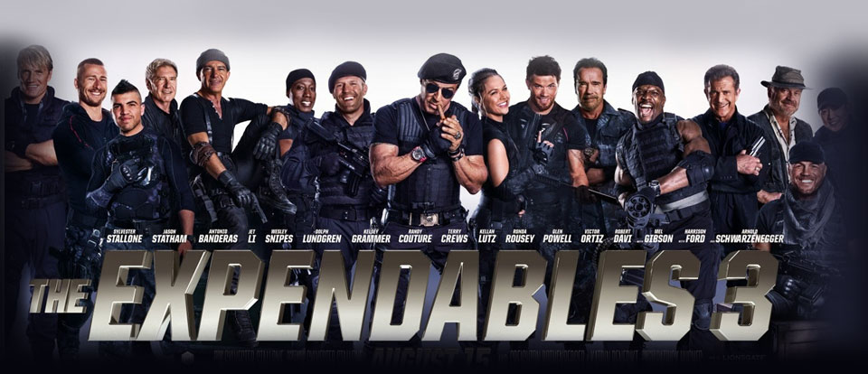

1) Safe
Genre: Action movie, thriller
Release date: April 27, 2012
Short discription:Ex-cop and cage fighter Luke Wright (Jason Statham) unintentionally wins a fixed fight, angering Emile Docheski (Sándor Técsy), head of the Russian mafia. As punishment, Docheski's son Vassily (Joseph Sikora) and his men kill Wright's pregnant wife, then promise to kill anyone to whom he speaks regularly. Luke leaves his life behind, becoming a homeless tramp. Meanwhile, in China, Mei (Catherine Chan), a young math genius, is kidnapped by men working for Triad boss Han Jiao (James Hong). Han wishes to use Mei as a mental calculator to eliminate his criminal enterprise's traceable digital footprint. He sends her to New York City, in the care of brutal gangster Quan Chang (Reggie Lee)
2) Expendables
Genre: Action movie, thriller
Release date: August 13, 2014
Short discription: The Expendables—led by Barney Ross and formed by Lee Christmas, Gunner Jensen, and Toll Road—extract former member Doctor Death, a knives specialist and team medic, from a military prison during his transfer on a train. They recruit Doc to assist them in intercepting a shipment of bombs meant to be delivered to a warlord in Somalia. Arriving there, they reunite with Hale Caesar, who directs them to the drop point, where Ross is surprised to find out that the arms trader providing the bombs is Conrad Stonebanks, a former co-founder of the Expendables who went rogue and was presumed dead. In the ensuing firefight, The Expendables kill all but Stonebanks, who shoots Caesar. They are forced to retreat due to Stonebanks' advanced weaponry, and Caesar is severely injured.
Genre: Fantastic,action movie, thriller
Release date: December 20, 1984
Short discription: In 1984 Los Angeles, a cyborg assassin known as a Terminator arrives from 2029 and steals guns and clothes. Shortly afterward, Kyle Reese, a human soldier from 2029, arrives. He steals clothes and evades the police. The Terminator begins systematically killing women named Sarah Connor, whose addresses it finds in the telephone directory. It tracks the last Sarah Connor to a nightclub, but Kyle rescues her. The pair steal a car and escape with the Terminator pursuing them in a police car. As they hide in a parking lot, Kyle explains to Sarah that an artificial intelligence defense network, known as Skynet, will become self-aware in the near future and initiate a nuclear holocaust. Sarah's future son John will rally the survivors and lead a resistance movement against Skynet and its army of machines. With the Resistance on the verge of victory, Skynet sent a Terminator back in time to kill Sarah before John is born, to prevent the formation of the Resistance. The Terminator, a Cyberdyne Systems Model 101, is an efficient killing machine with a powerful metal endoskeleton and an external layer of living tissue that makes it appear human.
4)Predator
Genre: Action movie, thriller,fantastic
Release date: June 12, 1987
Short discription: A spacecraft flies near Earth and releases an object which enters the atmosphere. Some time later, in a Central American jungle, U.S. Army Special Forces Major Alan “Dutch” Schaefer and his elite military rescue team — Mac, Billy, Blain, Poncho, and Hawkins — are tasked by their commander with rescuing an official held hostage by insurgents. CIA agent Dillon, a former commando and an old friend of Dutch, is assigned to supervise the team, despite Dutch's objections
home